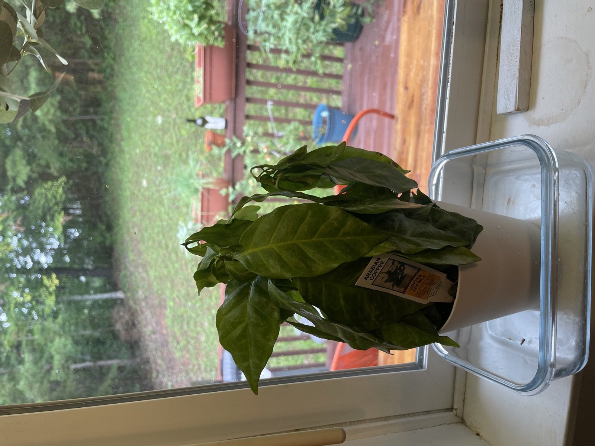
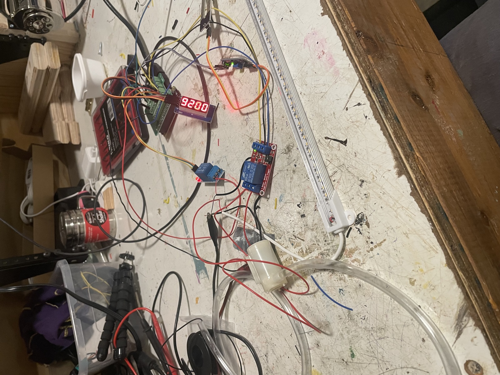
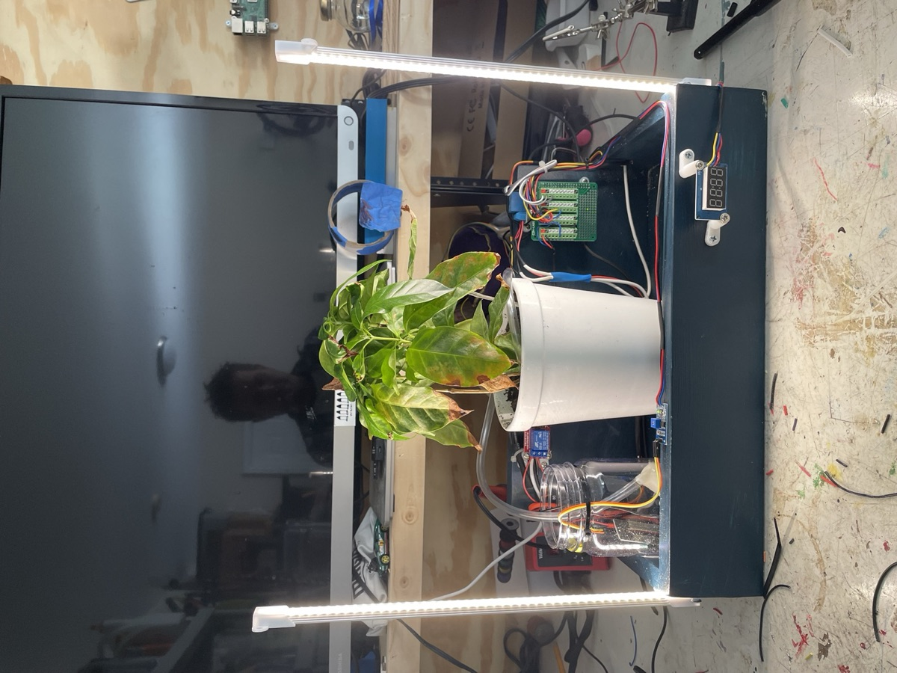
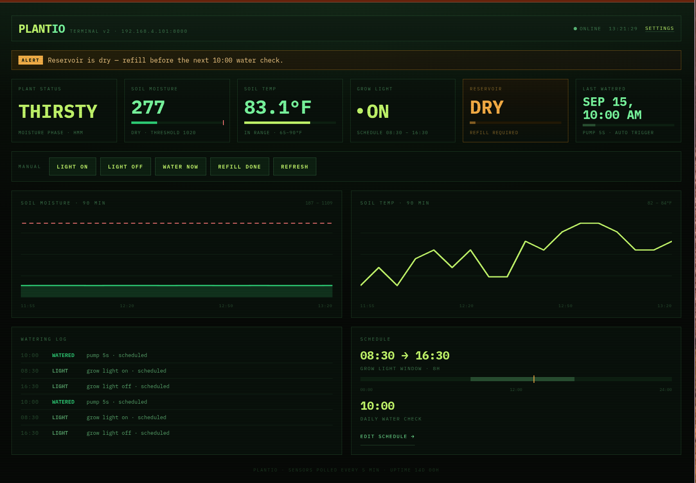

01
The starting point
One sad coffee plant
It started with an Arabica coffee plant and a confession: I kept forgetting to water it. Droopy, neglected, and running out of patience with me. Time to take the job out of my hands.
P—02 · Furniture & eccentric builds
A coffee plant I kept forgetting to water, kept alive by a pile of spare parts. A pump, a soil moisture sensor, grow lights, and a Raspberry Pi Zero calling the shots. Here's how it came together, in five phases.

01
The starting point
It started with an Arabica coffee plant and a confession: I kept forgetting to water it. Droopy, neglected, and running out of patience with me. Time to take the job out of my hands.

02
Prototyping the sensors
Next came the guts: a pump to move water from a reservoir into the soil, a soil moisture sensor to know when it's needed, a relay to switch the grow lights, and a seven-segment display for quick feedback. Mostly leftovers from previous projects, all wired up to a Raspberry Pi Zero.

03
The first build
I boxed it all up: plant in the middle, grow lights on either side, reservoir and electronics tucked around the edges. Plugged in and running for the first time.

04
Keeping an eye on it
A little web dashboard to watch soil moisture, temperature, the watering log, and whether the reservoir needs a refill. Still a work in progress, but enough to know the plant is being looked after.

05
Today
The plant is bigger, greener, and, against all odds, still alive. Turns out the trick was to stop leaving it up to me.